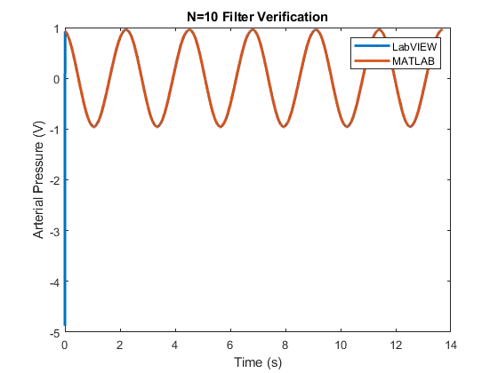
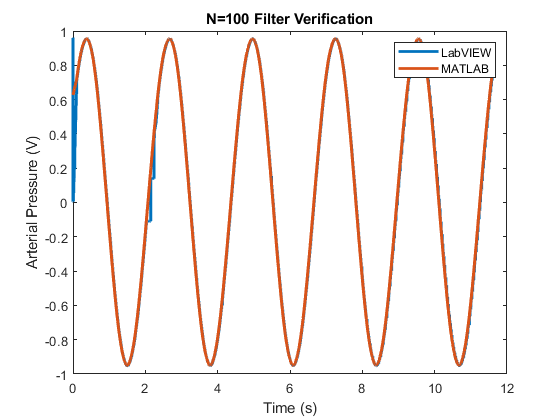

Contents
Determining qualities of input signal BP TESTING
[frequency, amplitude, mean] = inChar('../data/IIIA5V.lvm')
frequency =
50.8689
amplitude =
4.7815 0.5080
mean =
0.0752
Checking that filter did what we intended + Characterizing the Transfer Function MAP TESTING
for N = [10, 100, 1000, 10000]
filename = "../data/IIIA" + num2str(N) + ".lvm";
mapArray = load(filename);
x = mapArray(:,3);
y = mapArray(:,2);
newY = zeros(size(y));
for i = 1:length(y)
window = y(max(i-N+1,1):i);
newY(i) = sum(window)/length(window);
end
M = length(x);
fs = 1000;
dt = 1 / fs;
t = (0:M-1) * dt;
figure(N)
plot(t,x,t,newY, "LineWidth", 2)
legend("LabVIEW", "MATLAB")
xlabel("Time (s)")
ylabel("Arterial Pressure (V)")
title("N="+num2str(N)+" Filter Verification")
figure(N + 1)
plot(t,y,t,x,"LineWidth", 2)
legend("Measured BP", "Calculated MAP")
xlabel("Time (s)")
ylabel("Arterial Pressure (V)")
title("N="+num2str(N)+" Performance")
end
 
Finding delay and confirming 5mV resolution OUTPUT TESTING
clear;clc;
outputArray = load("../data/IIIAZ5V.lvm");
y = outputArray(:,1);
x = outputArray(:,2);
z = outputArray(:,3);
N = length(x);
fs = 1000;
dt = 1 / fs;
df = fs/N;
f = (0:N-1) * df;
t = (0:N-1) * dt;
mu_y = mean(y);
y = y - mu_y;
mu_z = mean(z);
z = z - mu_z;
offset = mu_z - mu_y
delay = finddelay(y,z);
delayTime = delay * dt
gain = mean(z(delay+1:N) ./ y(1:N-delay))
offset =
0.0010
delayTime =
0.0080
gain =
1.0332
90 bpm VALIDATION
clear, clc
data = sprintf('../data/IIIB90bpm10000.lvm');
[x y z] = textread(data,'%n %n %n','headerlines',23);
t = 1:2000;
xa = x(9001:11000);
ya = y(9001:11000);
x1 = x(8991:10990);
y1 = y(8991:10990);
x2 = x(9011:11010);
y2 = y(9011:11010);
length(t)
length(x2)
figure(1)
subplot(2,1,1);
pa = plot(t/1000,ya*100,'-k',t/1000,xa*100,'-b','LineWidth',2);
hold on
pa1 = plot(t/1000,x1*100,'-g','LineWidth',2);
pa2 = plot(t/1000,x2*100,'-c','LineWidth',2);
grid on;
legend('Arterial Pressure','T_{MAP} = 667 ms','T_{MAP} = 657 ms','T_{MAP} = 677 ms');
xlabel('Time (seconds)')
ylabel('Pressure (mmHg)')
hold off
subplot(2,1,2)
pb = plot(t/1000,ya*100,'-b','Linewidth',2);
hold on
pb1 = plot(t/1000,y1*100,'-g','Linewidth',2);
pb2 = plot(t/1000,y2*100,'-c','Linewidth',2);
axis([0 2 72 75]);
grid on;
xlabel('Time (seconds)')
ylabel('MAP (mmHg)')
hold off
ans =
2000
ans =
2000
180 bpm
clear, clc
figure(2)
t = 1:2000;
data3 = sprintf('../data/IIIB180bpm10000.lvm');
[X Y Z] = textread(data3,'%n %n %n','headerlines',23);
x3 = X(10001:12000);
y3 = Y(10001:12000);
figure(2)
subplot(2,1,1)
pc = plot(t/1000, y3*100,'-b', t/1000, x3*100, '-r','Linewidth', 2)
legend('Arterial Pressure','T MAP = 667 sec')
grid on;
title('90 Beats per Minute')
xlabel('Time (seconds)')
ylabel('Pressure (mmHg)')
subplot(2,1,2)
pd = plot(t/1000,y3*100,'-b','LineWidth',2);
axis([0 2 72 75]); grid on;
ylabel('MAP, mmHg');
xlabel('Time, s');
pc =
2×1 Line array:
Line
Line
60 bpm
clear, clc
data3 = sprintf('../data/IIIB60bpm10000.lvm');
[X Y Z] = textread(data3,'%n %n %n','headerlines',23);
t = 1:2000;
x = X(10001:12000);
y = Y(10001:12000);
subplot(2,1,1)
pe = plot(t/1000, y*100, '-r', t/1000, x*100, '-b', 'Linewidth', 2)
grid on;
legend('Arterial Pressure','T_{MAP} = 667 ms');
xlabel('Time (seconds)')
ylabel('Pressure (mmHg)')
subplot(2,1,2)
pd = plot(t/1000,y*100,'-b','LineWidth',2);
axis([0 2 72 75]); grid on;
ylabel('MAP, mmHg');
xlabel('Time (seconds)');
function [freq, A, mu] = inChar(filename)
bpArray = load(filename);
x = bpArray(:,1);
y = bpArray(:,2);
mu = mean(x);
x = x - mu;
N = length(x);
fs = 1000;
dt = 1 / fs;
df = fs/N;
f = (0:N-1) * df;
t = (0:N-1) * dt;
X = abs(1/N * fft(x));
figure(1)
plot(t(t>0.5& t<0.6),x(t>0.5 & t<0.6), 'LineWidth',2)
xlabel('Time (s)')
ylabel('Amplitude (V)')
title('5V Square Wave, 50Hz')
figure(2)
plot(f,X)
xlabel('Frequency (Hz)')
ylabel('Amplitude (V)')
title('5V Square Wave, 50Hz, ASD')
[~, maxIndex] = max(X(1:round(N/2)));
freq = f(maxIndex);
pks = findpeaks(x);
A = [mean(pks), std(pks)];
end
pe =
2×1 Line array:
Line
Line